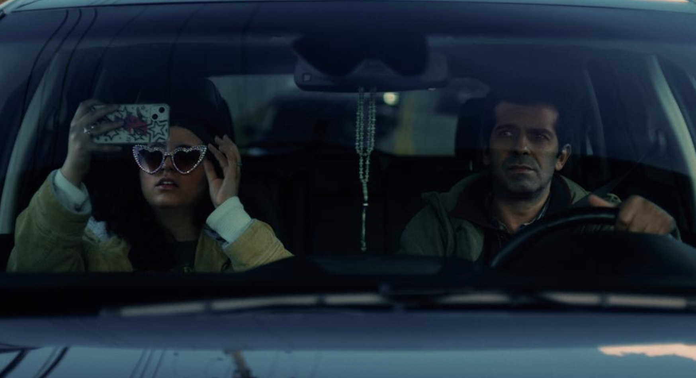

Baba I'm Fine VFX editor and supervisor on SXSW-selected short film written and directed by Karina Dandashi. Learn MoreFilm Production
Before the briefs, there were scripts.
Visual Effects
Festival-selected short films, VFX supervision, editorial precision, and post-production problem solving.
Writing and Directing
Awards
Kiki McCabe and Agnes Nixon Screenwriting Award
Won for the screenplay Tightrope from Emory University's Creative Writing department. The award was presented by Pulitzer Prize-winning poet Dr. Jericho Brown.